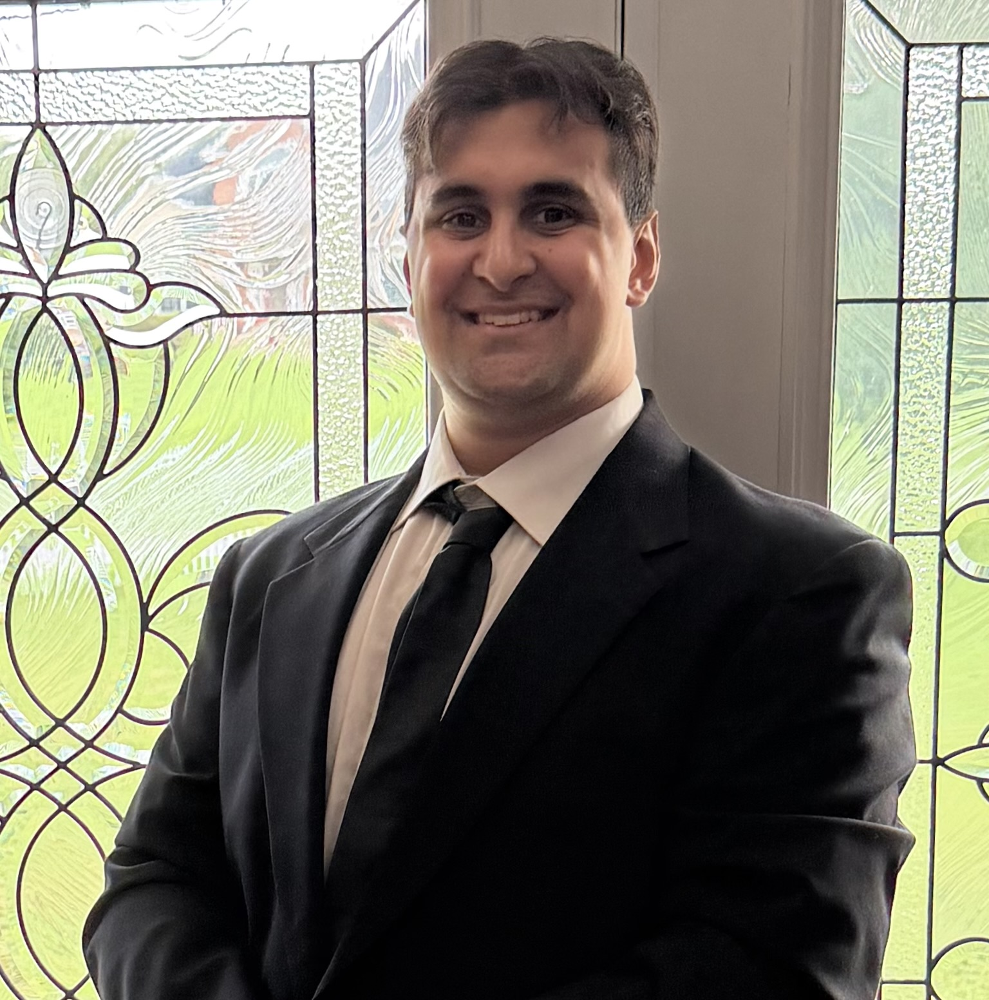
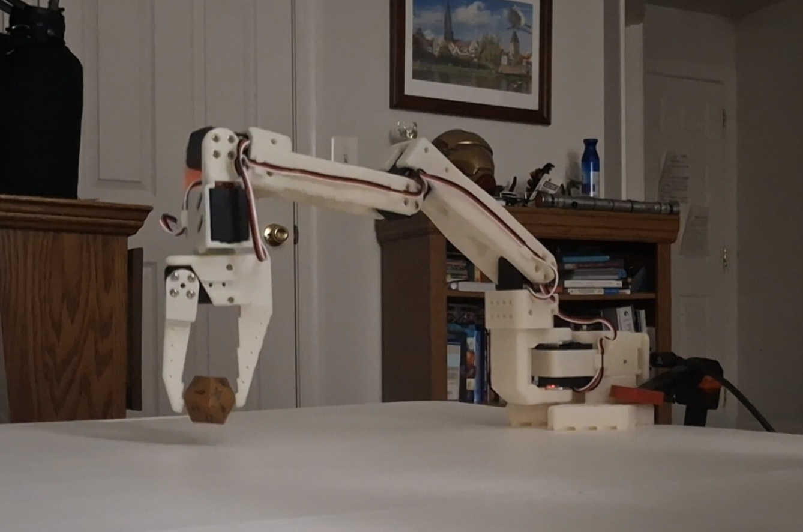
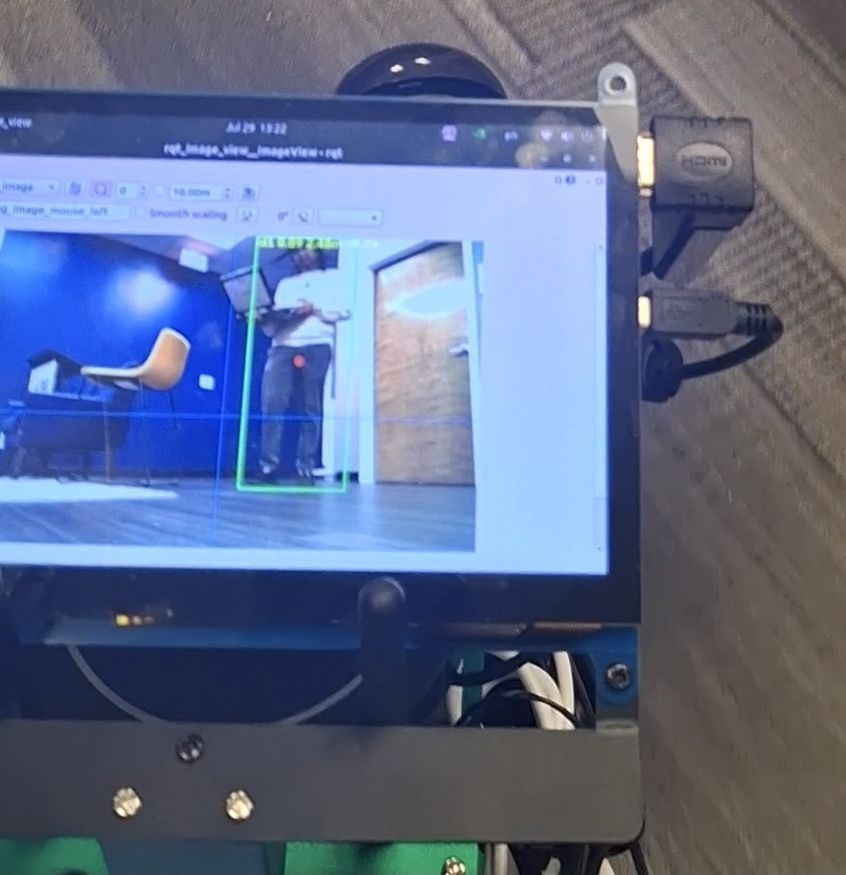
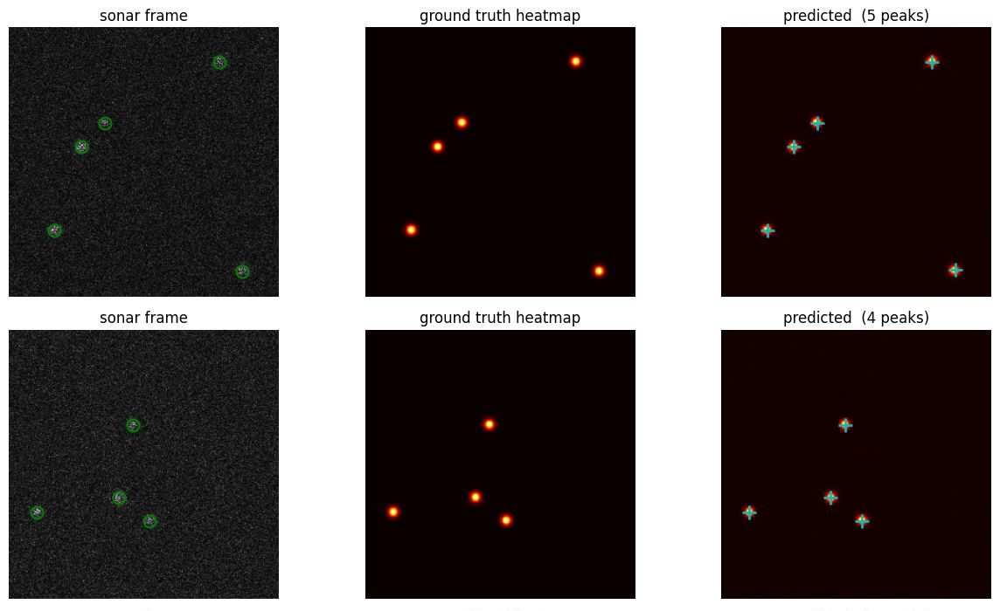
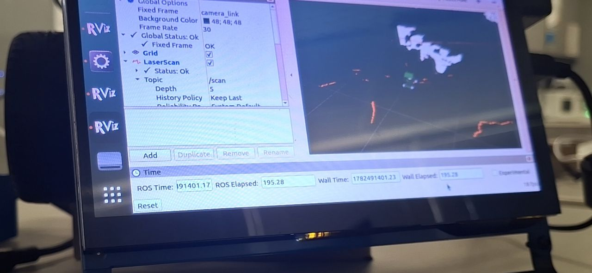

Lukas Pfalz
Robot learning and autonomy software
I build robot software that has to work on the actual robot. At KBR this summer, that was a rover that tracks a person, steers to them at 20 Hz, and talks through a voice assistant, all on one Jetson with no cloud. Now I'm teaching a robot arm to learn from demonstrations instead of hand-tuning every controller.
Seeking
Summer 2027 Internship or Fall 2027 Co-Op
Robot learning, autonomy, and perception. B.S. Computer Science, UMGC, Class of 2027.

About me Why I build robots, and what I do when I'm not building them.
Projects
Each project has its own page with video and the story behind it.

Current project, started September 2026
Robot learning on a desktop arm
Teleoperating an SO-101 arm with LeRobot, building toward imitation learning and sim-to-real policies.

KBR internship, summer 2026
Autonomous rover with a voice
Finds a target, steers to it at 20 Hz, and talks with people through a language model running on the robot.

Independent research, since December 2025
Sonar vision for murky water
A transformer that turns imaging sonar into features a fiducial detector can read when cameras are blind.

Forterra internship, 2025
Autonomous-fleet telemetry pipeline
Streams autonomous-fleet telemetry into PostgreSQL and turns it into Grafana dashboards for uptime, autonomous miles, and mission success.

Personal project. Preview: LiDAR scan from the KBR rover
SLAM and path planning
LiDAR, camera, and IMU fused into a semantic map, with an A* planner choosing the route.
Experience
-
June to August 2026
KBR, data science intern
Multi-Domain Autonomous Command and Control project. Rover perception, steering control, and an on-device voice agent. Rover project page
-
May 2025 to present
Forterra, yard software intern
Built the pipeline that streams autonomous-fleet telemetry into PostgreSQL (Dockerized Python ETL with idempotent upserts and fault-tolerant batching) and the Grafana dashboards the team uses to track uptime, autonomous versus manual miles, and mission success. Pipeline project page
-
August 2025 to January 2026
Robotics@Maryland, Qubo AUV perception
Jetson Orin vision pipeline with OpenCV and YOLO for the University of Maryland's underwater robotics team, tuned for real-time stability in competition.
-
Earlier
Teams and labs
TREC Lab at Virginia Tech (wiring for the ESCHER humanoid), UMD BattleBots, and FIRST Robotics Team 4514, where I was programming lead.
Education and tools
- B.S. Computer Science, University of Maryland Global Campus, expected 2027. 4.0 GPA, Dean's List.
- Earlier coursework in computer science and information science at the University of Maryland, College Park, 2021 to 2025.
- Interested in imitation learning and vision-language-action models for manipulation, sim-to-real transfer, and learned perception for GPS-denied and low-visibility environments.
- English (native), German (conversational).
- NVIDIA Isaac Sim and Isaac Lab
- LeRobot
- PyTorch
- ROS 2 Humble
- Python
- ONNX
- TensorRT
- OpenCV
- YOLO
- Whisper
- Jetson Orin
- Docker
- PostgreSQL
- Grafana
- Linux
- Git
Contact
Email is the fastest way to reach me.